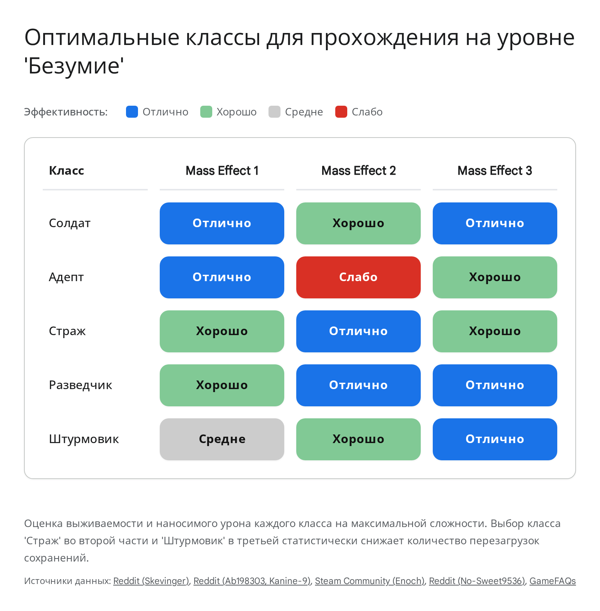
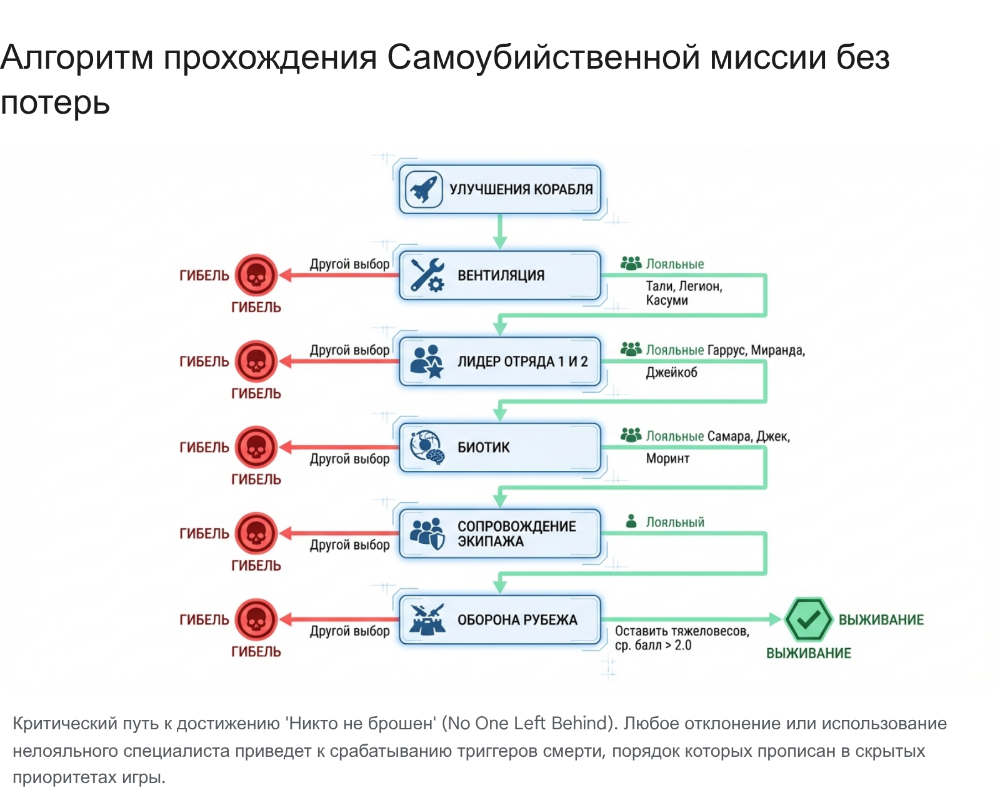

1) Один маршрут вместо трех разрозненных
Legendary Edition лучше проходить как единую кампанию: один Шепард, три последовательных импорта, ручные сейвы перед романами и никакой смены сложности по ходу пути.
- Основа: создайте одного персонажа в ME1 и импортируйте его дальше без разрывов.
- Insanity: выставьте максимальную сложность еще до старта и не трогайте ее до титров ME3.
- Профиль: часть накопительной статистики и серия Paramour привязаны к профилю, а не к одному сейву.
- Страховка: держите сейвы перед Илом,
Omega-4 RelayиPriority: Cerberus Headquarters.
Expanded Phase Guide
Почему Insanity нельзя трогатьКлючевой риск
Серия трофеев Insanity I-III требует пройти каждую игру на максимальной сложности без единой смены параметра. Даже краткое понижение сложности в настройках обнуляет право на трофей в текущем прохождении.
Практически это означает одно правило: ставьте Insanity заранее и относитесь к каждому импорту как к продолжению одной и той же кампании, а не как к новому старту с правом на послабления.
Paramour без ловушки LiaraЧто помнить
Самая опасная ловушка серии Paramour лежит во второй части: роман только с Лиарой через Lair of the Shadow Broker не засчитывает Paramour II. Для гарантии нужен роман с полноценным членом экипажа ME2.
Если хотите сохранить линию Лиары для ME3, сначала получите триггер трофея во второй части, затем разорвите временный роман и уже после этого возвращайтесь к Лиаре через DLC-сценарий.
2) Подберите класс под конкретную игру, а не под бренд серии
Баланс между частями меняется слишком сильно, поэтому лучше строить ожидания не вокруг любимой роли, а вокруг того, как игра считает щиты, броню, биотику и контроль.

Mass Effect 1
Soldier дает простую выживаемость, а Adept ломает бой контролем и биотикой через щиты.
Mass Effect 2
Sentinel безопаснее всего на Insanity: снимает все типы защиты и переживает ошибки через Tech Armor.
Mass Effect 3
Vanguard сверхсилен при грамотном тайминге, а Гаррус с N7 Typhoon превращает финал в тир.
Expanded Phase Guide
Почему ME2 самая жесткаяБоевая логика
Во второй части почти каждый враг на Insanity получает дополнительный слой защиты. Пока у цели есть щиты, броня или барьеры, контроль толпы работает заметно хуже или не работает совсем.
Именно поэтому Sentinel и Infiltrator считаются самыми прагматичными вариантами: первый надежно ломает защиту и переживает давление, второй дает безопасный позиционный урон и сброс агро.
Garrus в ME3 как чит-кодЧто делает сборка
Если в ME3 вложить Гаррусу пассивки в урон штурмовых винтовок и дать ему N7 Typhoon с бронебойными патронами, он начинает плавить даже тяжелые цели быстрее, чем большинство классов игрока.
Это не отменяет аккуратного маршрута, но резко снижает цену ошибок в конце трилогии и делает добивку боевых трофеев заметно спокойнее.
3) Mass Effect 1 нужно играть медленнее, чем кажется
Самая опасная ошибка в первой части происходит не в бою, а в диалогах на Цитадели. До первого самостоятельного вылета лучше считать игру не начавшейся, пока не закрыт Archivist и не собран базовый план по союзникам.
- Archivist: Протеане спрашиваются у Андерсона и Найлуса еще до высадки на Eden Prime.
- Цитадель: доберите Elcor, Volus, Hanar, Keepers и Rachni через нужные разговоры и терминалы Avina.
- Batarians: или ранний разговор с Андерсоном, или страховка через Bring Down the Sky.
- Ally Achievements: после вербовки Лиары все шесть союзников закрываются сериями по 5 сданных заданий.
- Пауэр-фарм: многие способности можно безопасно прокликивать по терминалам Цитадели или по Mako.
- Мораль: Charm/Intimidate приоритетнее сырого комбат-оптимизма.
Expanded Phase Guide
Минимальный маршрут на ArchivistЧто нельзя забыть
Самые нервные записи: Protheans на борту Нормандии в самом начале, Geth через ранний разговор с Эшли, Batarians до первого отлета с Цитадели, а также блок через Elcor, Volus, Hanar и терминалы Avina.
Если держаться этого маршрута, трофей падает еще до того, как галактика по-настоящему откроется. Это лучший момент обезвредить самый неприятный missable всей первой игры.
Почему Ally-трофеи теперь не страшныМаршрутизация
В Legendary Edition требования к спутникам радикально упали: теперь достаточно пяти любых завершенных заданий с нужным персонажем в отряде. Поэтому после спасения Лиары можно быстро сдавать пачки квестов, меняя пары спутников на борту Нормандии.
Это освобождает остальную игру от старой обязаловки и позволяет уже после раннего часа геймплея брать тех, кто реально нужен по бою или по ролеплею.
4) В Mass Effect 2 подготовка важнее самого финала
До миссии Reaper IFF нужно считать, что игра еще находится в доке: все апгрейды Нормандии куплены, лояльность закрыта, а мораль достаточно высока, чтобы мирно разрулить самые токсичные конфликты экипажа.

Jacob
Heavy Ship Armor. Без нее лазерный удар на подлете мгновенно убивает Джека.
Tali
Multicore Shielding. Без щитов корабль теряет одного спутника уже на кладбище обломков.
Garrus
Thanix Cannon. Без пушки крейсер Коллекционеров ломает идеальный ран.
Expanded Phase Guide
Что реально делает таймер после IFFТочка невозврата
После возврата с Reaper IFF игра запускает скрытый обратный отсчет. Обычно он дает ровно одну нормальную миссию, которую и стоит потратить на лоялку Легиона.
Как только окно закрывается, Коллекционеры берут Нормандию на абордаж. С этого момента любое лишнее задание уже начинает убивать похищенный экипаж.
Почему лояльность важнее почти всегоПсихология экипажа
Лояльность в ME2 влияет не только на личные сцены, но и на выживание персонажей в самой Suicide Mission. Нелояльный специалист может сорвать роль даже при правильном выборе класса.
Отдельно держите мораль на уровне, достаточном для мирного урегулирования конфликтов Miranda vs Jack и Tali vs Legion. Потерять лояльность на этом этапе слишком дорого для финала и для импортов в ME3.
5) Suicide Mission выигрывается таблицей, а не героизмом
Финал второй части выглядит как постановка на импровизацию, но внутри него почти все считается формулами: кто лоялен, кто подходит на роль, кого вы забрали на босса и какой средний оборонительный вес остался позади.
Фаза 1
Vent specialist: только Tali, Legion или Kasumi. Лидер огневой группы: Garrus, Miranda или Jacob.
Фаза 2
Biotic bubble: только Jack, Samara или Morinth. Эскорт экипажа лучше отдавать слабому, но лояльному бойцу.
Фаза 3
Hold the Line: оставьте Garrus, Grunt и Zaeed в тылу. Средний балл обороны должен быть не ниже 2.0.
Omega-4 Relay без лишних заданий, а на финального босса забирайте не тяжелых якорей обороны, а слабых или средних спутников.Expanded Phase Guide
No One Left Behind и тайминг экипажаСамое частое падение рана
Идеальный сценарий прост: после абордажа Коллекционеров не делайте вообще ничего лишнего и сразу прыгайте через ретранслятор. Один-два лишних квеста уже начинают перемалывать экипаж, а после четырех живых почти не остается.
Если ваша цель не просто пройти игру, а сохранить максимально сильный импорт в ME3, этот отрезок нельзя играть «по настроению».
Как держать Hold the LineПрактическая математика
Главные якоря обороны у лояльного отряда: Grunt, Zaeed и Garrus. Их выгоднее оставлять на рубеже, а на босса брать менее тяжелых спутников.
Игра имеет собственный приоритет смертей, и первыми обычно умирают самые хрупкие участники. Поэтому отправка, например, Мордина в эскорт экипажа часто является не «слабым» решением, а математически самым безопасным.
6) Mass Effect 3 наказывает не сложностью, а порядком
В Legendary Edition показатель готовности галактики навсегда зафиксирован на 100%, поэтому вам нужен не мультиплеер, а чистая сумма ресурсов. Цель одна: подойти к Priority: Cerberus Headquarters с запасом не ниже 7400 TMS.
- Priority — последними: сначала чистите журнал текущего акта, потом толкайте сюжет.
- DLC обязательны: From Ashes, Leviathan, Omega и Citadel дают слишком много ресурсов, чтобы их пропускать.
- Сканирование: закрывайте туманности и артефакты по мере открытия карты, а не после Кроноса.
- Rannoch: мир между гетами и кварианцами окупается тысячами TMS и требует аккуратной базы из ME2.
Priority: Cerberus Headquarters. Всё найденное после этого на концовки уже не работает.Expanded Phase Guide
Самые ценные развилки TMSПолитический слой
Крупнейшие качели по ресурсам сидят в двух блоках: генофаг и конфликт гетов с кварианцами. Первый дает суровый моральный выбор, второй требует заранее спасенных Легиона и Тали, мирно закрытого конфликта в ME2 и правильных действий на Раннохе.
Если хотя бы одна из этих линий сломана, добрать 7400 становится заметно тяжелее и приходится компенсировать всё сканированием и почти полным зачистным маршрутом.
Почему Priority-миссии нужно откладыватьСкрытая срочность
Маркер Priority выглядит как совет идти туда сейчас, но по факту именно он чаще всего и убивает побочный контент. После некоторых сюжетных шагов игра тихо закрывает второстепенные задания и убирает персонажей со сцены.
Поэтому безопасный принцип в ME3 обратный: сначала локальная уборка сектора, потом основная история.
7) Добивка здесь быстрее, чем кажется
Последний крупный блок не про сюжет, а про точечные боевые условия и профильные счетчики. Главное понять, какие вещи считаются глобально, а какие игра засчитывает только если действие сделал сам Шепард.
Hijacker
Снимите щиты Атласу через Overload, разбейте стекло кабины, убейте пилота и только потом садитесь внутрь.
Mail Slot
Десять убийств через щель щита Guardian лучше фармить на удобном чекпойнте с перезагрузкой.
Sky High / Pyromaniac
В ME3 учитываются только способности, которые прожал именно Шепард. Бонусные силы решают проблему неподходящего класса.
- Профильные счетчики: часть прогресса переносится между играми и переживает перезагрузки, поэтому ручные сейвы у хороших чекпойнтов экономят часы.
- Paramour-страховка: перед финальными романами держите отдельные сейвы, если хотите выбивать трофей без поломки личного канона.
- Melee и убийства: глобальная статистика Legendary Edition щедрее, чем кажется, но ее проще добивать точечно, чем надеяться на естественный хвост.
Expanded Phase Guide
Что реально фармить через перезагрузкуЭкономия времени
Mail Slot, часть убийств по профилю и многие накопительные задачи спокойно добиваются через перезапуск одного и того же удобного чекпойнта. Это особенно полезно, если основной маршрут уже закончен, а не хочется растягивать ран на часы ради нескольких штук.
Идея простая: выбираете момент с понятной группой врагов, выполняете условие, перезагружаетесь и повторяете, пока профиль не отдаст достижение.
Почему бонусные силы критичныME3-нюанс
В отличие от ME1, где многое может добивать и отряд, в ME3 часть боевых трофеев засчитывается только за личные касты Шепарда. Если ваш основной класс не умеет поднимать врагов в воздух или поджигать их, без бонусного навыка фарм становится бессмысленным.
Проверьте это заранее в медотсеке Нормандии и просто поставьте нужную силу на отдельный фарм-сетап.
8) Последний рывок: Gunsmith и финальный архив
Главный постскриптум всей коллекции лежит в третьей части: Gunsmith нельзя честно взять в первом прохождении, потому что обычная кампания режет улучшения оружия на уровне V. Нужен импорт в New Game+ после титров ME3.
- ME3 NG+: импортируйте завершенного персонажа и поднимайте одну модель оружия до ранга X.
- Архив сейвов: не удаляйте сейвы перед Илом, Omega-4 и Cerberus HQ даже после трофеев. Это страховка под любые хвосты и альтернативные концовки.
- Финальный проход по спискам: проверьте отдельно ME1, ME2, ME3 и общий список Legendary Edition, чтобы не оставить одинокий профильный хвост.
Expanded Phase Guide
Что оставить в архиве сейвовПрактический минимум
Минимальный набор: перед Илом в ME1, перед Omega-4 Relay в ME2 и перед Cerberus Headquarters в ME3. Эти три точки перекрывают почти все риски: романы, финалы, TMS и альтернативные решения.
Если вдруг окажется, что профилю не хватило одного флага, такие сейвы экономят не часы, а целые повторные прохождения.
Финальный смысл маршрутаИтог
Идеальный ран по Mass Effect Legendary Edition строится не на чистой механике стрельбы, а на дисциплине: нужный диалог на старте ME1, правильный момент для Reaper IFF, правильный порядок Priority-миссий в ME3 и аккуратная работа с профильными достижениями.
Если все восемь фаз закрыты, вы получаете не просто три платины, а полностью собранную трилогию без потерянных импортов и с лучшим доступным финалом.
Когда отметите все восемь фаз, мини-апп покажет финальную карточку. Это общий трекер по маршруту, а не замена внутриигровому списку трофеев.